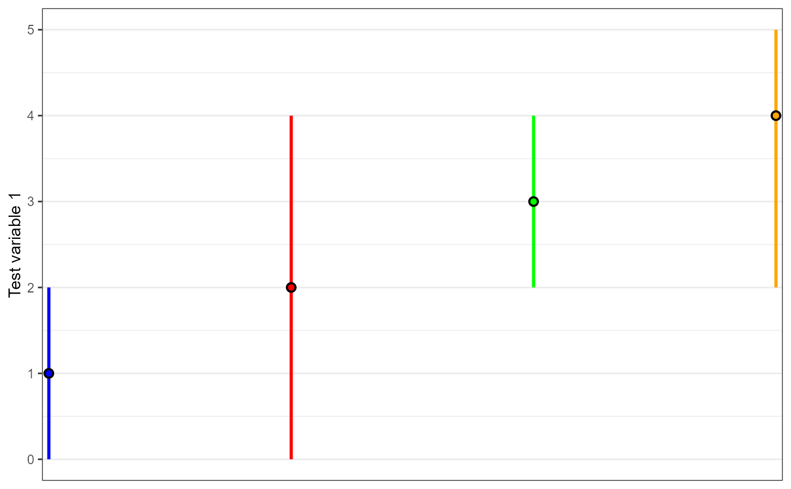

R/peakPantheR_plotPeakwidth.R
peakPantheR_plotPeakwidth.RdFor a single ROI, plot the peak value and peakwidth (RT, m/z,
...) of detected peaks across multiple samples, by acquisition time or in
input order. If rotateAxis=FALSE x is run order / plot order, y is the
apexValue / widthMin / widthMax, if
rotateAxis=TRUE x is the measurement values and y the run order.
peakPantheR_plotPeakwidth(apexValue, widthMin = NULL, widthMax = NULL, acquTime = NULL, varName = "variable", sampleColour = NULL, rotateAxis = FALSE, verbose = TRUE)
| apexValue | (float) vector of apex value |
|---|---|
| widthMin | (float) vector of detected peak minimum peakwidth value or NULL (if NULL no peakwidth) |
| widthMax | (float) vector of detected peak maximum peakwidth value or NULL (uf NULL no peakwidth) |
| acquTime | (POSIXct) vector of sample acquisition time as POSIXct or NULL (if NULL points are plotted in the order values are passed as input with the first on top or left) |
| varName | (str) Name of the variable to plot |
| sampleColour | (str) NULL or vector colour for each sample (same length
as |
| rotateAxis | (bool) if TRUE x and y axis are reversed |
| verbose | (bool) if TRUE message when NA scans are removed |
Grob (ggplot object)
## Input data apexVal <- c(1, 2, 3, 4) minVal <- c(0, 0, 2, 2) maxVal <- c(2, 4, 4, 5) acqTime <- as.POSIXct(c('2017-07-13 21:06:14', '2017-07-14 21:06:14', '2017-07-15 21:06:14', '2017-07-16 21:06:14')) ## Plot 4 sampels with colour peakPantheR_plotPeakwidth(apexValue=apexVal, widthMin=minVal,widthMax=maxVal, acquTime=NULL, varName='Test variable 1', sampleColour=c('blue','red','green','orange'), rotateAxis=FALSE, verbose=FALSE)## Plot 4 samples with colour by acquisition time peakPantheR_plotPeakwidth(apexValue=apexVal, widthMin=minVal,widthMax=maxVal, acquTime=acqTime, varName='Test variable 2', sampleColour=c('blue','red','green','orange'), rotateAxis=FALSE, verbose=FALSE)## Plot 4 samples with colour, rotate axis peakPantheR_plotPeakwidth(apexValue=apexVal, widthMin=minVal,widthMax=maxVal, acquTime=NULL, varName='Test variable 3', sampleColour=c('blue','red','green','orange'), rotateAxis=TRUE, verbose=FALSE)## Plot 4 samples with colour by acquisition time, rotate axis peakPantheR_plotPeakwidth(apexValue=apexVal, widthMin=minVal,widthMax=maxVal, acquTime=acqTime, varName='Test variable 4', sampleColour=c('blue','red','green','orange'), rotateAxis=FALSE, verbose=FALSE)